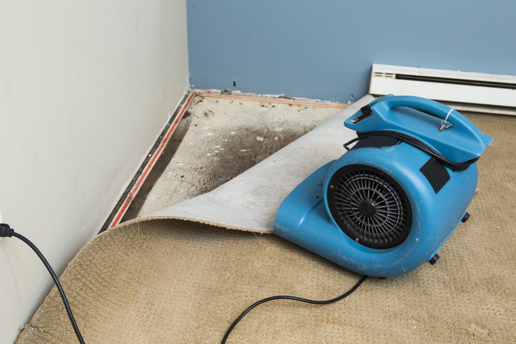

Water damage is one of the most common—and costly—problems homeowners face. In North Texas, where weather conditions can swing from scorching summers to sudden storms, the risk is even higher. Understanding the main causes of water damage can help you stay prepared and take quick action when problems arise. At SWAT Restoration, we’ve seen it all, and we’re here to break down the top culprits.
A small leak may seem harmless at first, but over time it can cause significant water damage inside your walls, floors, and foundation. In extreme cases, a burst pipe can flood an entire room in minutes. Older homes in Fort Worth and Weatherford are especially prone to these issues, as aging plumbing materials deteriorate over time.
Tip: Regular plumbing inspections can catch these problems early before they become disasters.
North Texas storms are no joke. Heavy rain, flash floods, and hail can overwhelm drainage systems, seep into basements, or cause roof leaks. Even if your home isn’t in a designated flood zone, stormwater intrusion is always a risk in areas like Granbury or Azle, where sudden downpours can overwhelm local infrastructure.
Tip: Check your gutters, downspouts, and grading around your home to ensure water flows away from your foundation.
Roof damage often goes unnoticed until water starts dripping inside your home. High winds, hail, and general wear and tear can all compromise your roof’s integrity. Once water seeps through, it can damage insulation, drywall, and even your electrical system.
Tip: Schedule routine roof inspections, especially after severe weather events.
Water heaters, dishwashers, washing machines, and refrigerators with water lines are frequent culprits of water damage. Over time, hoses can crack, valves can fail, or tanks can corrode, releasing gallons of water onto your floors.
Tip: Replace old hoses with braided stainless steel and check appliances regularly for leaks.
North Texas’s clay soil expands when wet and contracts during dry spells, which can stress your foundation. This movement often leads to cracks where water can enter, or worse, slab leaks—where plumbing pipes running under your home break. Slab leaks can go unnoticed until significant water damage is already done.
Tip: Keep an eye out for unexplained water bills, damp spots on floors, or the sound of running water when pipes aren’t in use.
The longer water sits, the more damage it causes. Mold growth can start in as little as 24–48 hours, turning a small leak into a major health hazard. That’s why it’s crucial to act quickly when water damage occurs.
At SWAT Restoration, we’re your first responders for home disasters. From water removal and drying to repairs and insurance coordination, we handle it all—so you can focus on getting life back to normal.
Water damage doesn’t just harm your home—it disrupts your life. By understanding the main causes and staying proactive, you can reduce your risk. But if the unexpected happens, know that SWAT Restoration is ready 24/7 to step in, clean up, and restore your home with the care and integrity of a family-owned company.
Call SWAT Restoration today and let us bring your home back to life.